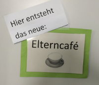

Das Eltern-Cafe ist keine neue Idee, hier möchten wir eine schon dagewesene Idee Reaktivieren.  Montags so ab 8.00 Uhr bis 9.30 Uhr möchten wir Alle ganz herzlich einladen mit einem Heißgetränk oder Softgetränk in die neue Woche zu starten. An den vergangenen Montagen war es sehr schön mit Eltern der Anderen Gruppen ins Gespräch zu kommen, auch das bunte Gemisch der Sprachen hat den Austausch bereichert.